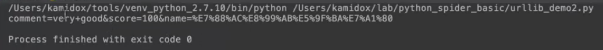

python urllib工具函数
urllib.urlencode
1）把字典数据转化成URL编码
2）用途
a)对URL参数进行编码
b)对post上去的form数据进行编码
示例：
# -*- coding: utf-8 -*-
import urllib
def urlencode():
params = {'score': 100, 'name': '爬虫基础', 'comment': 'very good'} //这里面我们的参数是长这个样子的，这是个字典
qs = urllib.urlencode(params) //编码以后
print(qs)
if __name__ == '__main__':
urlencode()
运行结果，这里比较特别的是name，本来是中文，被编码以后变成了utf8编码，空格也被编译成了+号，每个参数之间使用&号把它连接起来，所以这个就是urlencode的用法。

urlparse.parse-qs
把URL编码转换成字典数据，和urlencode正好相反
其它
1）quote
2）unquote
3）pathname2url
4）url2pathname
例子
百度搜索中文为例分析URL构成
示例：
# -*- coding: utf-8 -*-
import urllib
import urlparse
def urlencode():
params = {'score': 100, 'name': '爬虫基础', 'comment': 'very good'}
qs = urllib.urlencode(params)
print(qs)
print(urlparse.parse_qs(qs)) //解码回来
if __name__ == '__main__':
urlencode()
运行结果，可以看到编码后和解码后的内容。
我们来看一个更复杂的例子，百度搜索里面的url，我们看怎么从这个url里面去解析出这个所有的请求参数，代码如下：
# -*- coding: utf-8 -*-
import urllib
import urlparse
def urlencode():
params = {'score': 100, 'name': '爬虫基础', 'comment': 'very good'}
qs = urllib.urlencode(params)
print(qs)
print(urlparse.parse_qs(qs)) //解码回来
def parse_qs():
url = 'https://www.baidu.com/s?wd=url%20%E7%BC%96%E7%A0%81%E8%A7%84%E5%88%99&rsv_spt=1&rsv_iqid=0x928cf1380000a436&issp=1&f=8&rsv_bp=0&rsv_idx=2&ie=utf-8&tn=baiduhome_pg&rsv_enter=1&rsv_sug3=16&rsv_sug1=15&rsv_t=1699JwFmhB8a5kfErU33lHHt8KRbsMzqMwqlJ00%2F9fusUM%2Bmx3gc8GLs5In0kVh7s3zU&rsv_sug2=0&inputT=5565&rsv_sug4=6174'
result = urlparse.urlparse(url) //解析完后会返回一个结果
print(result)
if __name__ == '__main__':
urlencode()
parse_qs()
运行结果，我们可以看到，这个返回的结果里面是一个parseResult对象，它的网络协议是https，query这个属性就是我们要的参数。

我们把这个query解析出来，代码如下：
# -*- coding: utf-8 -*-
import urllib
import urlparse
def urlencode():
params = {'score': 100, 'name': '爬虫基础', 'comment': 'very good'}
qs = urllib.urlencode(params)
print(qs)
print(urlparse.parse_qs(qs)) //解码回来
def parse_qs():
url = 'https://www.baidu.com/s?wd=url%20%E7%BC%96%E7%A0%81%E8%A7%84%E5%88%99&rsv_spt=1&rsv_iqid=0x928cf1380000a436&issp=1&f=8&rsv_bp=0&rsv_idx=2&ie=utf-8&tn=baiduhome_pg&rsv_enter=1&rsv_sug3=16&rsv_sug1=15&rsv_t=1699JwFmhB8a5kfErU33lHHt8KRbsMzqMwqlJ00%2F9fusUM%2Bmx3gc8GLs5In0kVh7s3zU&rsv_sug2=0&inputT=5565&rsv_sug4=6174'
result = urlparse.urlparse(url) //解析完后会返回一个结果
print(result)
params = urlparse.parse_qs(result.query)//解析query
print_dict(params)
if __name__ == '__main__':
urlencode()
parse_qs()
运行结果，我们可以看到这是个字典
【本文由麦子学院独家原创，转载请注明出处并保留原文链接】